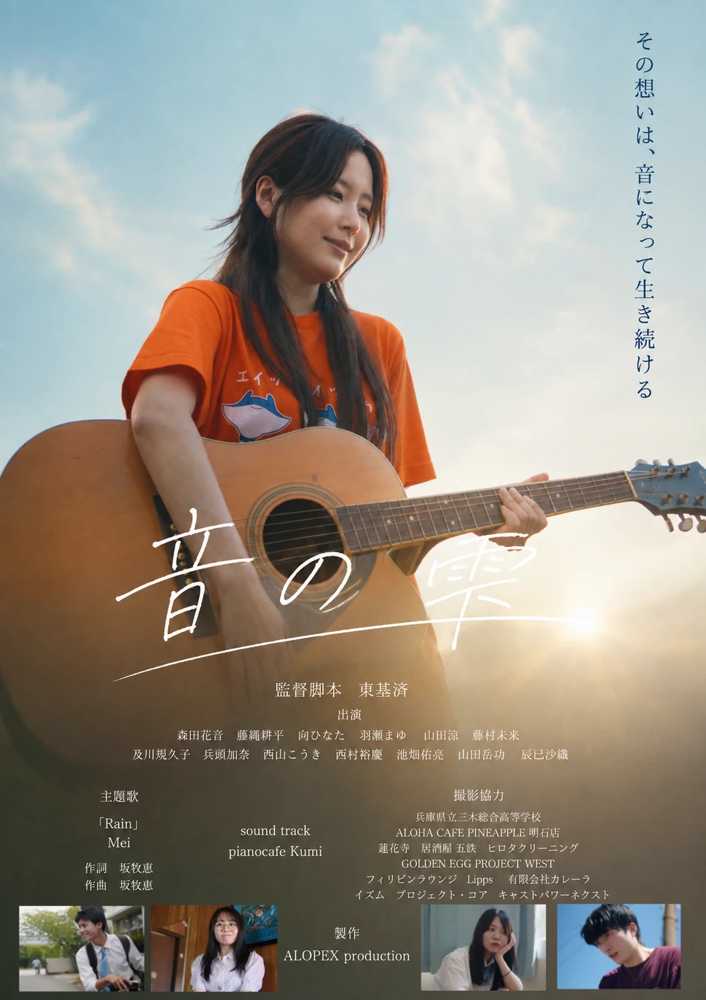

ALOPEX CINEMA / FEATURED FILM
音の雫
OTO NO SHIZUKU
※情報は映像制作部の既存詳細HTMLをもとに構成した確認用原稿です。一般公開前に表記・権利確認が必要です。
01 / STORY
あらすじ
17歳の夏。
「バンド、組まない？」
雨野柚音の何気ない一言から、幼なじみの松木真人、親友の神崎夢香、人付き合いが苦手な本多翔太、どこか大人びた桂木夏織――それぞれ違う想いを抱えた5人が集まった。
バンド名は「シトラス」。
楽器も、恋も、友情も、何もかもがまだ不器用だった。
誰かを好きになること。誰かのために強くなること。そして、仲間と同じ音を鳴らすこと。
ずっと続くと思っていた、17歳の夏。けれど、あの夏に鳴らした音は、やがて彼らの人生に消えることのない記憶を残していく。
これは、もう戻れない季節に置いてきた“想い”と“音”をめぐる物語。
02 / OFFICIAL TRAILER
予告編
YOUTUBEで開く ↗03 / CAST & CREDITS
出演・スタッフ
DIRECTED & WRITTEN BY
東基済
CAST
森田花音
藤縄耕平
向ひなた
羽瀬まゆ
山田涼
藤村未来
及川規久子
兵頭加奈
西山こうき
西村裕慶
池畑佑亮
山田岳功
辰巳沙織
THEME SONG
「Rain」／Mei
作詞・作曲 坂牧恵
SOUNDTRACK
pianocafe Kumi
PRODUCTION STAFF
久保護
千原あかり
藤村未来
藤縄耕平
小谷旺生
中多亮輔
CINEMATOGRAPHY & EDITING
東基済
PRODUCTION
ALOPEX production
04 / SPECIAL THANKS
撮影協力
兵庫県立三木総合高等学校ALOHA CAFE PINEAPPLE 明石店蓮花寺居酒屋 五鉄ヒロタクリーニングGOLDEN EGG PROJECT WESTフィリピンラウンジ Lipps有限会社カレーライズムプロジェクト・コアキャストパワーネクスト
※既存HTMLにあるSPECIAL THANKSおよび学校演劇部員の個人名は、表記・掲載許諾を照合したうえで追加予定です。